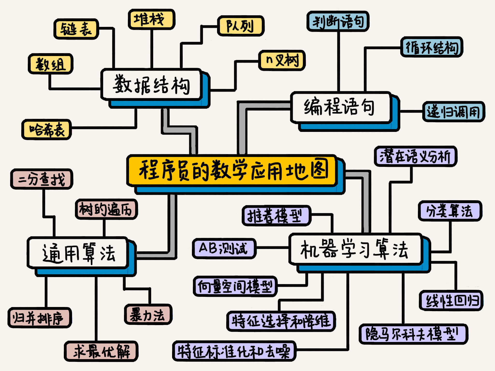

- 01 二进制：不了解计算机的源头，你学什么编程.md.html
- 02 余数：原来取余操作本身就是个哈希函数.md.html
- 03 迭代法：不用编程语言的自带函数，你会如何计算平方根？.md.html
- 04 数学归纳法：如何用数学归纳提升代码的运行效率？.md.html
- 05 递归（上）：泛化数学归纳，如何将复杂问题简单化？.md.html
- 06 递归（下）：分而治之，从归并排序到MapReduce.md.html
- 07 排列：如何让计算机学会“田忌赛马”？.md.html
- 08 组合：如何让计算机安排世界杯的赛程？.md.html
- 09 动态规划（上）：如何实现基于编辑距离的查询推荐？.md.html
- 10 动态规划（下）：如何求得状态转移方程并进行编程实现？.md.html
- 11 树的深度优先搜索（上）：如何才能高效率地查字典？.md.html
- 12 树的深度优先搜索（下）：如何才能高效率地查字典？.md.html
- 13 树的广度优先搜索（上）：人际关系的六度理论是真的吗？.md.html
- 14 树的广度优先搜索（下）：为什么双向广度优先搜索的效率更高？.md.html
- 15 从树到图：如何让计算机学会看地图？.md.html
- 16 时间和空间复杂度（上）：优化性能是否只是“纸上谈兵”？.md.html
- 17 时间和空间复杂度（下）：如何使用六个法则进行复杂度分析？.md.html
- 18 总结课：数据结构、编程语句和基础算法体现了哪些数学思想？.md.html
- 19 概率和统计：编程为什么需要概率和统计？.md.html
- 20 概率基础（上）：一篇文章帮你理解随机变量、概率分布和期望值.md.html
- 21 概率基础（下）：联合概率、条件概率和贝叶斯法则，这些概率公式究竟能做什么？.md.html
- 22 朴素贝叶斯：如何让计算机学会自动分类？.md.html
- 23 文本分类：如何区分特定类型的新闻？.md.html
- 24 语言模型：如何使用链式法则和马尔科夫假设简化概率模型？.md.html
- 25 马尔科夫模型：从PageRank到语音识别，背后是什么模型在支撑？.md.html
- 26 信息熵：如何通过几个问题，测出你对应的武侠人物？.md.html
- 27 决策树：信息增益、增益比率和基尼指数的运用.md.html
- 28 熵、信息增益和卡方：如何寻找关键特征？.md.html
- 29 归一化和标准化：各种特征如何综合才是最合理的？.md.html
- 30 统计意义（上）：如何通过显著性检验，判断你的A_B测试结果是不是巧合？.md.html
- 31 统计意义（下）：如何通过显著性检验，判断你的A_B测试结果是不是巧合？.md.html
- 32 概率统计篇答疑和总结：为什么会有欠拟合和过拟合？.md.html
- 33 线性代数：线性代数到底都讲了些什么？.md.html
- 34 向量空间模型：如何让计算机理解现实事物之间的关系？.md.html
- 35 文本检索：如何让计算机处理自然语言？.md.html
- 36 文本聚类：如何过滤冗余的新闻？.md.html
- 37 矩阵（上）：如何使用矩阵操作进行PageRank计算？.md.html
- 38 矩阵（下）：如何使用矩阵操作进行协同过滤推荐？.md.html
- 39 线性回归（上）：如何使用高斯消元求解线性方程组？.md.html
- 40 线性回归（中）：如何使用最小二乘法进行直线拟合？.md.html
- 41 线性回归（下）：如何使用最小二乘法进行效果验证？.md.html
- 42 PCA主成分分析（上）：如何利用协方差矩阵来降维？.md.html
- 43 PCA主成分分析（下）：为什么要计算协方差矩阵的特征值和特征向量？.md.html
- 44 奇异值分解：如何挖掘潜在的语义关系？.md.html
- 45 线性代数篇答疑和总结：矩阵乘法的几何意义是什么？.md.html
- 46 缓存系统：如何通过哈希表和队列实现高效访问？.md.html
- 47 搜索引擎（上）：如何通过倒排索引和向量空间模型，打造一个简单的搜索引擎？.md.html
- 48 搜索引擎（下）：如何通过查询的分类，让电商平台的搜索结果更相关？.md.html
- 49 推荐系统（上）：如何实现基于相似度的协同过滤？.md.html
- 50 推荐系统（下）：如何通过SVD分析用户和物品的矩阵？.md.html
- 51 综合应用篇答疑和总结：如何进行个性化用户画像的设计？.md.html
- 导读：程序员应该怎么学数学？.md.html
- 开篇词 作为程序员，为什么你应该学好数学？.md.html
- 数学专栏课外加餐（一） 我们为什么需要反码和补码？.md.html
- 数学专栏课外加餐（三）：程序员需要读哪些数学书？.md.html
- 数学专栏课外加餐（二） 位操作的三个应用实例.md.html
- 结束语 从数学到编程，本身就是一个很长的链条.md.html
- 捐赠
导读：程序员应该怎么学数学？
你好，我是黄申。
在开篇，我详细讲了程序员为什么需要学数学。那么，怎样的学习方法才是行之有效的呢？我想你现在心里还没有一个固定的答案，而我不想一味地去讲我自己的一家之言，毕竟没有什么学习方法是最好的。
你能做的是要多看，去找适合自己的。而我能做的，就是尽量给你更多的参考，让你可以自己来选择。所以，我邀请了几位朋友，让他们来谈一谈，自己学习数学的一些心得体会，希望对你有所启发。
刘超 | 《趣谈网络协议》专栏作者：“学数学就像学一门新技术”
程序员是否需要学好数学？原本学数学分析、概率论、线性代数的时候，我也没想到数学和写程序有啥关系，但是随着研究的开源软件越来越多，我发现很多技术深入下去，本质就是数学。
程序员应该怎么学习数学呢？我不建议你将大学的数学书拿出来啃一遍，一来耗费大量时间，二来和实际应用结合不起来，往往该看的忽略了，不该看的费了半天劲用不上，过一阵又忘了。
我们了解一个新技术有三个阶段，第一阶段是，怎么使用；第二阶段是，如何实现，原理是什么；第三阶段是，为什么这样实现。学数学和学一门新技术一样，也有这样三个阶段，先用起来，了解原理，然后了解为什么。
用一句话来说，我们不能为了数学而学数学，学数学要和具体的应用结合在一起。
徐文浩 | bothub.ai创始人：“先广度，再深度”
随着过去几年深度学习成为程序员界的显学，不少程序员开始回头复习微积分、概率论和线性代数这样的基础数学课，乃至开始学习最优化、博弈论这样的应用数学课。我自己则是因为从2010年一头扎入了计算广告的大坑之后，重新开始学习数学。
可以说，这次重新学习数学，为我自己推开了程序世界中另一扇门，使得我在埋头具体写代码之外，有机会重新从另一个角度，去认识和理解“程序”和“问题的解决方案”这两件事情。
我为什么要学点数学?
投入时间学习数学，于我来说主要是两个原因，一来，数学在工作中用得上；二来，学点数学很多时候是个有趣的事。
譬如说，过去几年火起来的深度学习，以及之前没那么火，但是实际上早早就在搜索、广告这些领域，应用的机器学习和推荐算法。这里面其实就是结合了微积分、线性代数、概率论之后的最优化问题。
事实上，大部分应用领域的核心解决方案，都是把应用领域的问题，形式化为一个个数学问题。在找到数学问题的“解法”之后，用写程序的方式翻译成实际应用的“算法”。而能够应用“数学”的方式来解决问题，是从一个只能套用现成方案的“码农”，向能够将新问题形式化、并找出创新解决方案的“研发工程师”迈出的第一步。
很多问题当你知道如何用数学来解决的时候，常常会有醍醐灌顶的感觉。譬如当我第一次搞明白，广告中的竞价问题，居然能够变成一个博弈论中“寻找上策均衡”的问题，并且能够通过简简单单的公式表示出来的时候，我是很有满足感的。
此外，一旦熟悉了机器学习中用到的数学知识，很多想要解决的系统问题，都能通过定义更好的数学优化目标，变成一个能够找到最优解的程序算法，最后通过写个程序，翻译成数学问题来解决，这个过程带给我巨大的身心愉悦。
我是如何学数学的？
数学整个领域很大，如果想要学点什么，我建议从工作相关的领域开始，先广度，再深度。
从工作相关的领域开始，是让自己一是能有实际用得上学到的知识的机会，二是日常工作中容易耳濡目染，相当于常常在复习。而先有广度，是让自己在心中有一个问题到解决方法的“地图”，遇到具体的问题能够对得上，容易获得正反馈；然后再有深度，具体去对一个特定的主题学习应用。
当开始深入学一个特定问题的时候，最好的方式是，追一门在线课程，譬如Coursera、TEDx，或者在极客时间上找一门课程来学习。
这是因为，在线课程有明确的节奏，通常还会提供作业和测验。通过作业和测验，让自己对自己的学习有一个联系和反馈的过程。即使实践中没有足够的应用，过一段时间有些知识没有那么熟悉了，但是也容易建立自己很快可以“捡”回来的信心，降低“复习”的启动成本。跟随在线课程的节奏，可以有效避免“三天打渔两天晒网”的恶习，让学习有始有终。
最后，给你介绍一个有程序员特色的学习方法，针对学习的内容写一点程序。把正在学习的问题的解法，写一个算法实现出来。这是一个非常有效的练习方式。譬如学习线性代数，理解仿射，反复读书的效率对我来说，就不如找来Coding The Matrix，通过写程序，让学习、理解变得更深入。
王天一 | 《人工智能基础课》《机器学习40讲》专栏作者：“数学是工具而非问题，是手段而非目的”
在数学的学习中，首要的问题是明确需求。作为非数学专业出身的“外行”，我们使用数学的目的不是顶天，而是立地；不是上下求索艰深的理论问题，而是将生活中的具体问题抽象化，进而加以解决。
因此，对于我们这些票友来说，学习数学的基础在于经验而非哲学，比较实际的思路是秉持功利主义的原则，用多少学多少。掌握基本的线性代数与矩阵论、概率论与数理统计知识足以应付日常的使用，盲目地好高骛远通常有害无益。理论化和公理化这些比较深邃的尝试固然让人着迷，但它们可能并没有肉眼可见的实用性，对于绝大部分计算机从业者恐怕过于阳春白雪。
其次，在学习时还要理解数学的本质。数学是工具而非问题，是手段而非目的。探索世界奥秘的学科是“格物穷理”的物理学，相形之下，数学更像是个任人打扮的小姑娘，它存在的意义就是通过合理的设计简化物理学的研究。
正因如此，在数学中存在着各种各样在现实中不可能出现的理想化模型（比如无穷小和极限的诞生），也存在着对同一个物理过程不同的建模方式（比如矩阵力学和波动力学）。充分理解数学的人造特质，可以在学习中少走很多无谓的弯路。
理解数学的工具属性就会自然而然地引出了数学学习中的另一个关键点，那就是工具设计的出发点，也就是所谓的数学思想与数学逻辑。
任何一个工具都不是平白无故地设计出来的，它必然要解决某个特定的问题，比如线性代数与矩阵论是对具体对象的抽象表示与运算，比如概率论和数理统计是对不确定性及其定型定量表示的建模。因此，在掌握每一种数学工具的微观技巧之前，理解它们的宏观目标是更加重要的。只有掌握了工具诞生的背景与目的，才有可能有效地使用它们。
在这里还要多说一句，数学绝不仅仅是算术，把主要精力放在计算上未免因小失大。在经典科幻《银河系漫游指南》中，超级计算机告诉人们，世界的终极答案是“42”——这更像是对数字主义者善意嘲讽的一个梗。但对算术的过度强调并不鲜见，在相当数量的现行数学教材中，讲解线性代数时开篇便给出行列式的计算方法，这种编排着实让人费解。
具体到数学每个子学科的学习方法上，相关的经验教训已然汗牛充栋，很多内容都无需在此赘言。但在我看来，学习时值得突出强调的一点是举一反三的能力。同一种工具及其背后的思想可以出现在不同的场景下，解决不同的问题，但是一旦深入到本质层面，就会发现它们实际上是相通的。如何透过现象看本质，将不同场景融会贯通，才是值得锻炼的高级能力。
同一个工具存在不同应用的例子不胜枚举：
特征向量计算的是系统的不动点，在数据降维中有举足轻重的作用，但如果熟悉电子通信的话你就会知道，对线性时不变系统的分析（也就是各种变换）都是基于特征向量展开的；
在给定隐马尔可夫模型的观测序列时，可以利用维特比算法求解后验概率最大的状态序列，将这一方法应用在信道编码中，就是最经典的卷积码译码算法；
在分类问题中，以类间方差最大化为标准可以推导出线性判别分析和决策树等模型，应用在图像处理中，类间方差最大化原理给出的就是图像分割中的Otsu方法。
凡此种种都说明，即使是不同的学科，使用的数学基础也有着千丝万缕的联系，将基本的数学概念和充分的想象力结合起来，触类旁通就变得轻而易举。
总结起来，我对数学学习的几点拙见是：把握数学的工具属性，学习具体方法时先溯因再求果，勤于思考解决相同问题的不同方法，与解决不同问题的相同方法之间的联系与区别。希望这几条建议能够在数学的学习中助你一臂之力。
好了，三位老师都分享完了自己的学习方法。其实他们有一个共同的观点，那就是数学要是“实用”的，这和我的想法如出一辙。
因此，我在这里绘制了一张“程序员的数学应用地图”，里面包含四个部分，分别是数据结构、编程语句、基础算法，以及机器学习算法。

（长按保存后可查看大图）
我们来一起看看这张图里都有什么内容。
首先我们来看最常用的数据结构和编程语句，我想你对它们应该非常熟悉。在我眼里，这些基础的内容，同样富含了数学思维。例如，数组和链表就体现了迭代和递归的思想，判断语句就是使用了逻辑（布尔）代数。
对于架构在这些数据结构和编程语句之上的算法（为了将这些算法和机器学习的算法区分，我称其为通用算法），除了迭代和递归，也体现了排列、组合和动态规划等思想。
对于机器学习的算法而言，我们更需要理解概率统计和线性代数的核心思想，包括什么是概率、贝叶斯定理、数据的统计分布、向量、矩阵、线性方程等等。
整个专栏我基本上都是从数学的角度出发，逐步推进到这些知识在计算机中的应用。不过在绘制这张应用地图的时候，我特意反其道而行之，从计算机编程的角度出发，为你展示程序员应该如何看待编程中的数学知识。
我觉得在开始学习之前，这个地图会给你一个大体的认识，告诉你计算机领域常用的数学思想有哪些。这时，你也许会产生一些疑惑，同时你可以带着自己的思考和问题去逐篇学习。等你学完整个专栏之后，再回头来看看这个地图，应该会有更深的感触。我希望这种双向打通，能够进一步加强你的学习体验。
另外，我也整理了本专栏中涉及到的所有代码，以方便你学习。
好了，听了这么多心得和方法，有没有什么地方是最触动你的呢？下一节我们就要进入正式的学习了，我想听你讲讲，你准备怎么来学习这门课呢？
欢迎留言和我分享，也欢迎点击“请朋友读”，把今天的内容分享给你的朋友，和他一起精进。
© 2019 - 2023 Liangliang Lee. Powered by gin and hexo-theme-book.